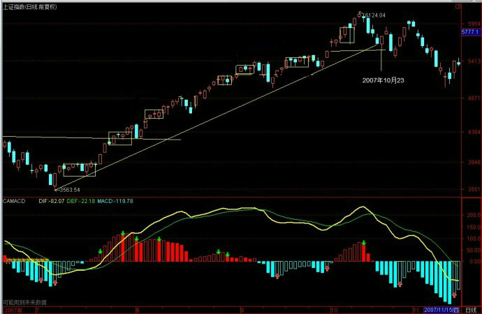
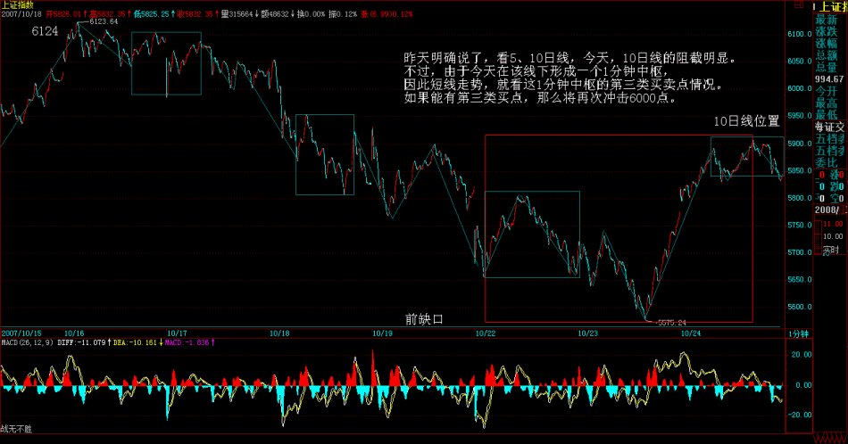

|
 |
教你炒股票85：逗庄家玩的一些杂史3
(2007-10-22 21:42:06)
说点老皇历，让各位都北大北大。
干这活的手法，就算现在的证券法算来，也是完全没有一点违法的地方，这绝对是一个经典案例，也看看股市里是如何做顶的。
当时要干的事情，就是要把一股票的货出掉，而且还是不是现价，必须在某个位置上。这不算难，关键是持有也就30%多，已经上涨N倍，而且里面有不少小家伙的老鼠仓，多的有10%。由于这游戏最终把一所谓的牛人给套住了，现在这牛人还在市场上混，最重要的是，这股票这么多年都没回到过当年的高位，所以为了不让那被套住的中年男人知道后有磨墙的心，更为了保护北京的文物，本ID就不说当时的价位和股票了。
先把1/2的筹码集中调到一个最多八卦人的证券部，然后，告诉他们，过三周内要陆续调N亿来，很认真地找了人去谈手续费分成问题，而且要求最高的比例，特别强调了对倒时比例要更高，注意，去谈的人也不知道想干什么，只是告诉他要在那边干点活，找一个成本最低的。
然后，该股就从N元开始异动起来，再起来20%后，就在别的证券部开始出，但手法很特别，总是在低位出，出了以后一副给夹空痛不欲生的样子，关于某股票被人抢筹码的消息就此流传。
接着，把出的钱以及部分其他的钱提前划到第一个证券部，然后再告诉他们，更多的钱还要划过来。
很快股价就比开始上涨40%了，继续在其他地方逢低出货，被彻底夹空。这一下戏演得连老鼠仓都知道损失无数筹码，要压盘把货补回来，老鼠仓也开始大幅度增仓。接着，已经不用逢低出货了。只要压单，就给扫掉，好过分呀。
这时候，开始在第一证券部谈透支问题，说要用筹码压钱，希望是1比2，但对方说他们最多只能1比1.5，因为最近这股票涨太多了。所以让人很气愤告诉他们，找了一个可以1比3透支的，马上就把筹码转了一半去别的证券部，然后对方就开始很恐慌地要挽留我们。其实，是别的地方出得差不多了，需要筹码。
最后一天，股票在三周多点上涨了70%多，那一天早上，一开盘，在买盘涌起的那一下，最后的屠刀开始了，所有剩余的筹码，一起涌出，具体过程就不说了，只是当天是跌停的，当然，那天也是巨大无比的量。
最后，派人和那第一家证券部说，不想玩了，你们那里风水不好，不能为客户保密，消息封锁不住，让我们被人砸盘，套住，亏死了，这里的资金要去别的地方救火去，走人了。
只想说最后那股票的命运，就是从最高位下跌了90%以上，至于比最开始的N元下跌了多少，大概不是一个困难的问题了。
注意，这次游戏，之所以经典，就是在整个做顶过程中，根本没拉抬过一笔，都是分批出货，最正常的手法，谁都说不了有任何违规的地方。而且，也没说任何一句影响股价的话，那么为什么成功了？只是因为那些人的贪嗔痴疑慢。
最绝的是，该股后来一直翻不过身来，多杀多的，自从最后一天后就从来没买卖过该股，但该股却一直下来，甚至后来2245点2001年的历史高位，也没靠近过那历史高位。有些傻瓜总是说，什么庄家打压，典型的脑子进水。为什么散户、小庄家、老鼠仓的多杀多就不可以让人死得一点脾气都没有？
当然，做顶的手法千百样，本ID也玩过无数的花招，有时候一顶就是一顶，有时候一顶不做一顶，千变万化。兵者，诡道，股票又何尝不是？
大盘的顶部和个股的顶部不同，要复杂得多，因为集中其中的分力更多，所以其合力当然要更复杂。一般来说，大盘的顶部都不会是简单的图形，都是十分复杂。而且即使真的形成，最后破位前反而要有很多的犹豫，越大型的顶部越是这样。
大盘的顶部都是折腾出来的，所以一般在大盘顶部时，反而机会多多，为什么？因为很多不死心的人，会不断折腾，板块个股，跳来跳去，那些认为大盘顶部一形成就一下死掉的，都是脑子水太多的。
个股的顶部，大多都不复杂，除非是很多人参与的大型股票，原因和大盘的一样，只是相反，就是分力少，对比太明显，所以复杂不起来。
当然，顶部是有级别的，一个中期顶部，中期调整后，就不是顶部了，所以顶部以后，也不一定是世界末日。但顶部以后是否世界末日，这是走势今后的发展决定的，如果你对任何顶部都想长线一把，那么，最终的命运多数是被股票上上下下地面首了，真正解决问题的，还是要通过本ID的理论去分清楚级别，按照买卖点去操作。
必须注意，无论什么花招，最终合力的结果还是买卖点，买卖点是不患，任何庄家、大资金，包括本ID本身，都不可逃避。所以，对于散户来说，其实不需要知道里面的故事，而只要看好走势，一切就尽在把握中了。
上升通道下轨支持如期反弹
(2007-10-23 15:40:39)
昨天说得很清楚，1分钟下跌底背驰后，一轮反弹将展开。今天的技术走势十分标准，更重要的是，这里是3600点上来的上升通道下轨位置，又是缺口位置，因此技术上必须要有这次反弹。

在前面已经明确说了，空头现在的策略，就是逢反弹必抢的，抢了以后，等不死心的涌上去没力时，才有筹码喂饱人。注意，这里本ID又有金针度人，不是任何反弹都可以抢的，只是做顶行情中的反弹可以抢，一旦顶部完全形成，破位后，那么反弹就没必要抢了，让别人去多杀多就可以，除非有特别大级别的买点。这是一个十分微妙的关系，但一般脑子进水的都不大明白。因为在那些人眼里，反弹都是一样，而实际上，在做顶行情中搞反弹，只是为了促进顶部的形成，而且也为一旦顶部形成不了而准备好后手。
做盘就如同下棋，必须有大的想法，而不是看一步走一步。着着有后手，这样才能稳胜不败。
以上的话，都是给现在技术还行的人看的，这里的标准就是，空仓或者目前的市值比6124.04点那天高的人。其他人，根本没资格抄什么反弹，先借反弹把市值恢复上去再说。
这如同跳舞，节奏已经错了，就不能错上加错，先把节奏调整对再说。
反弹的压力，首先是5日线，然后是10日线，如果这两条线都不能突破，那么这个反弹就将构成第二类卖点，后来是什么就不用说了。
注意，中石油上市，会给市场又一个兴奋的借口。但关键是政策面的趋向能给多少时间，中字头会借此兴奋一下，今天这已经有点表现。另外，二线蓝筹在反弹中也会表现的，例如科技股以及其他题材股之类，因为前面根本没动，所以有所轮动也很应该，但这些股，大面积表现的可能性不大。
本ID已经反复强调，顶不是一天搞成，这里有一个微妙的潜在语：最后破位之前，最终套住谁，现在还没有定呢，所以，6124.04点逃掉的，也不要高兴太早，一旦反弹做错，最后来个站岗大换班，那是常有的事情。
所以，现在的反弹操作，一定要谨慎，请量力而行
最近很忙，刚才一边写东西一边就电话不断，所以没时间回答问题了，抱歉。
先下，再见。
太累了，没时间写帖子，说两句闲话
(2007-10-23 22:37:58)
太累了，没时间写帖子，说两句闲话。
本来是可以写帖子的，结果晚上谈事回来，看到下面搞的合同，几乎把本ID看晕了，完全不是本ID的意思。本ID只好浪费不少时间，等于重写一遍合同，这种事还要亲自干，真是晕。
那些破事就不说了，说实话，最近本ID是越来越忙，明天下午又是一个谈判，别人专门从香港飞过来，还是一群人，不见不合适，所以，这博客如果有照顾不周的地方，请原谅。
当然，本ID会尽力坚持下去，如果实在太忙，也请各位谅解。下周又有一件剪彩的事情，必须出一次差，不去不行。本ID现在都有点担心，万一铺的事情太多，以后要撒手不干了，可能还不是简单的事情。
人在世上，总难如愿的。想安静，就太与世隔绝。一入红尘，很多事情就身不由己了，毕竟事情要好来好去，不可能干一半就撒手不管。
吃饭时，有一电话又来勾引本ID，说软银投了某某项目，让本ID也投点，明年就上市。一个老熟人，本ID又不好推，只能说先把项目资料发过来，看了资料，如果不错，不投不合适，投了又多一件事，无聊呀。
刚才改合同的时候，突然觉得很累，现在的事情有点收不住了，总之，本ID有一个心愿，40以后完全转向文化的建构，现在到40还有太多年了，怎么熬啊。
对不起，一时无聊，胡乱唠叨，抱歉了。
10日线如期阻截
(2007-10-24 15:14:14)
马上要去见香港来的一群无聊人，只能快速说两句。
昨天明确说了，看5、10日线，今天，10日线的阻截明显。不过，由于今天在该线下形成一个1分钟中枢，因此短线走势，就看这1分钟中枢的第三类买卖点情况。如果能有第三类买点，那么将再次冲击6000点。

如果短期没有特别消息，这个反弹应该继续延续，只是以横盘还是以继续上冲的类型选择。由于那资金解冻在后面，这么多资金，不骗点进来太对不起大家了，所以，只要没有突发性消息，反弹至少能延续下去把解冻资金骗点进来站岗。
个股没什么可说，都告诉各位中字头了。当然，这种形式是最消磨多头意志的，指数涨，却没有赚钱效应，这就是空头最爱干的事情。
如果特别的消息一直不出来，那么在没什么事干的情况下，空头不排除会再次上演拉指数的好戏，把消息给拉出来。
短线技术，明天就看今天这1分钟中枢的震荡情况，如果出现第三类卖点，那就有二次探底的需要。
就算是反弹，也可以是二次探底后再展开的，所以现在对于反弹类型的选择，是可以有很多种的，判断标准就是这1分钟中枢的震荡情况。
注意，再次强调，最后指数的破位，必须有消息配合，没有的话，最多只能箱体，除非这箱体延长时间太长，把所有搞怕了才可能破位。
对不起，要走了，先下，再见。
|
|
|
|